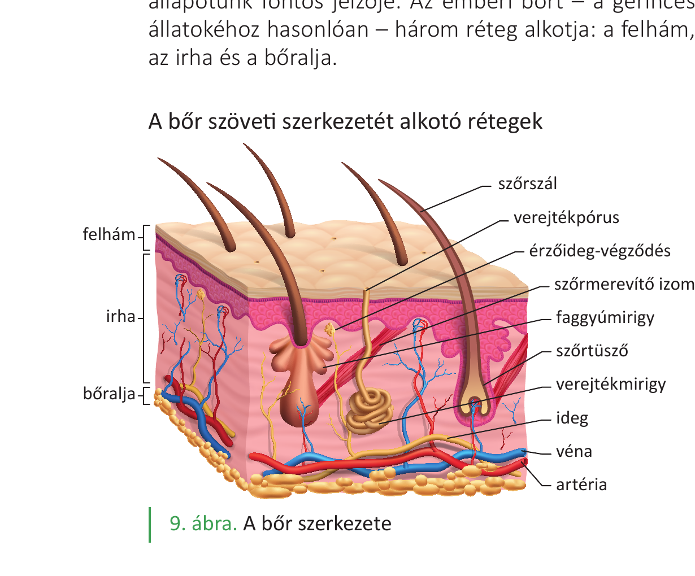
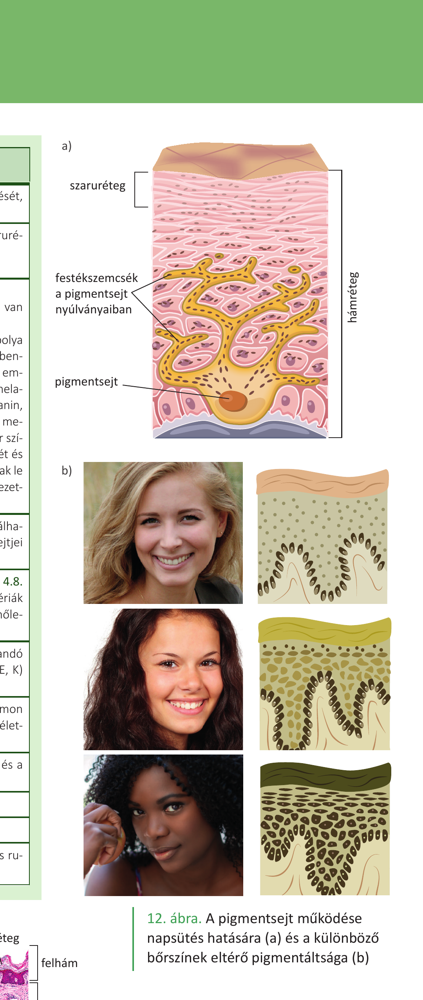
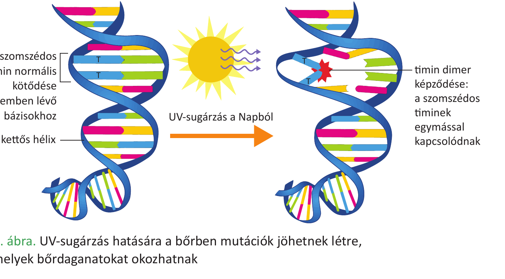

27. Emberi bőr és állati kültakaró¶
A bőr/kültakaró az élőlények első védelmi vonala a külvilág felé. Az emberi bőr a gerinces állatok bőrének (három rétegű) felépítését követi, az állati kültakarók viszont csoportonként eltérő szerkezetűek és módosulásúak.
Az emberi bőr¶
A bőr testünk első védelmi vonala, össztömege teljes tömegünk 10-15%-a. Egy átlagos termetű felnőtt bőrfelülete 2 m². A bőr védi szervezetünket a károsító külső hatásokkal szemben, emellett részt vesz az anyagcsere-folyamatokban és felfogja a külvilágból érkező ingereket. Óv a mechanikai hatásoktól, a hidegtől, a melegtől, a káros sugárzásoktól, a kórokozóktól és a kiszáradástól. Zsírokat raktároz, és részt vesz egyes anyagcseretermékek kiválasztásában is. Alapvető szerepe van a hőszabályozásban is. Színe, teltsége, tapintása egészségi állapotunk fontos jelzője.
Az emberi bőrt – a gerinces állatokéhoz hasonlóan – három réteg alkotja: a felhám, az irha és a bőralja.
1. Felhám (epidermis)¶
- Szövettanilag többrétegű, elszarusodó laphám építi fel.
- A szaru (keratin) az elhalt részek fő fehérjéje (a körömben, a hajban is megtalálható fehérje).
- Alsó rétegében festéksejtek (pigmentsejtek), osztódó sejtek (őssejtek), szabad idegvégződésekkel körülvett tapintósejtek (módosult hámsejtek) találhatók.
- A felhámrétegben (és az irhában) kötőszövetes burok nélküli, csupasz, gazdagon elágazó idegvégződések, ún. fájdalomérző receptorok is találhatók. Ezek a túlságosan erős, károsító hatású ingerekre érzékenyek, és ingerületük az agykéregben fájdalomérzetet kelt.
- A hámban nincsenek erek, sejtjei az irhából diffúzióval kapnak tápanyagokat.
- A hám megújulása mitózissal (számtartó osztódás) történik, a hám legalsó rétege pótolja a felette lévő rétegeket.
2. Irha (dermis)¶
- Ereket, idegeket tartalmaz.
- A benne található idegvégződések típusai: tapintó, hideg-, meleg-, nyomás- és fájdalomérző.
- A faggyúmirigy a szőrtüszőbe nyílik, a bőr felszínét és a szőrt ellátja faggyúval, így vízhatlanítja.
- A verejtékmirigy a bőr felszínére nyílik, a párologtatásban, és így a test hűtésében van szerepe.
- Ebben a rétegben találhatók főként a kötőszöveti sejtek, valamint a kötőszöveti fehérjerostok (kollagén, elasztin).
3. Bőralja (subcutis)¶
- Nagyrészt speciális kötőszövetből, zsírszövetből épül fel.
- A bőralja zsírrétege jó hőszigetelő, és a zsírban oldódó vitaminok (A, D, E, K) raktározó helye.
A bőr funkciói¶
- Védelem: mechanikai (rugalmasság), hideg/meleg, kórokozók (fizikai immunvédelem: nem engedi be a kórokozókat), kiszáradás (a szaruréteg nem engedi át a vizet: vízzáró barrier).
- Biológiai immunvédelem: a bőrön saját baktériumflóra van, amely megakadályozza a kórokozó baktériumok megtelepedését, elszaporodását.
- UV-védelem: a melanin (barna színű festékanyag) a pigmentsejtekben szemcsék formájában van jelen, jól elnyeli az UV-sugárzást. Az UV-sugárzás mutációt okoz, rákkeltő. A pigmentsejtek takarják az UV-sugárzásra érzékeny osztódó sejteket: nem a pigmentsejtek száma nő meg, hanem bennük a pigmentszemcsék száma, és jobban szétterülnek a sejtek nyúlványaiban. Az emberi bőrben kétféle melanin van: a sárgásvörös feomelanin és a barnásfekete eumelanin.
- Hőszabályozás: a bőr erei melegben kitágulnak, a hajszálerekben nő a véráramlás, ez hőleadást eredményez. A párologtatás (verejték) hőelvonással jár.
- Érzékelés: a hőmérséklet-változás, a fájdalom, a tapintás és a nyomás érzékelése. Bőrben található receptortípusok: hő-, fájdalom- és mechanoreceptorok.
- D-vitamin képződés: a 7-dehidrokoleszterolból UV-B sugárzás (290–315 nm) hatására D-vitamin/hormon képződik. Képződését a bőr színe, az életkor, a fényvédő krémek, a ruházkodási és életviteli szokások befolyásolják.
- Raktározás: zsírok és zsírban oldódó vitaminok.
A bőr egyéb képletei¶
A köröm és a szőr a felhám szaruképződményei. Az ujjak végén a bőr irhába nyúló hámrétege hozza létre a körmöket. A szőrszálak a szőrtüszőkben képződnek. A szőrtüsző hámsejtjei mélyen behatolnak az irhába, esetenként a bőraljába is. A szőrtüszőt a hám alsó felszínével szőrmerevítő izom köti össze, amely hidegben összehúzódik, a szőrszálat felmereszti.
A tejet termelő emlőmirigyek módosult verejtékmirigyek.
Állati kültakarók¶
A gerinces állatok kültakarójának külső rétege minden gerincesnél többrétegű hám. A szárazföldi gerinceseknél a bőr legfelső rétege elhalt szaruréteg, amely a kiszáradástól véd. Az egyes csoportok kültakarója csoportspecifikus módosulásokat mutat.
Kétéltűek¶
Kültakarójukat többrétegű, gyengén elszarusodó hám fedi. Bőrük méreg- és nyálkatermelő mirigyekben gazdag. Ezeknek fontos szerepük van a védekezésben és a légzésben (a kifejlett egyedek bőrlégzéssel is lélegeznek a tüdő mellett).
Hüllők¶
Az első valódi szárazföldi gerincesek. Kültakarójukat többrétegű, elszarusodó laphám védi a kiszáradástól. Testüket szarupikkelyek vagy szarupajzsok borítják. A kiszáradástól védő vastag szaruréteg tette lehetővé, hogy a hüllők váltak az első valódi szárazföldi gerinces élőlényekké.
Madarak¶
Kültakarójukat többrétegű, elszarusodó laphám védi a kiszáradástól. A toll szaruképződmény, amelynek a hőszigetelésben, az állandó testhőmérséklet megtartásában is van szerepe. Típusai: evezőtoll, fedőtoll és pehelytoll.
Emlősök¶
Kültakarójukat többrétegű, elszarusodó laphám védi a kiszáradástól. A szőr szaruképződmény, a hőszigetelésben, az állandó testhőmérséklet megtartásában is van szerepe. Bőrük rendszerint sok mirigyet tartalmaz: faggyú-, verejték- és tejmirigyeik vannak. A bőralja zsírrétege jó hőszigetelő. A csoport elnevezése onnan származik, hogy a tejmirigyek váladékával, emlőikből táplálják utódaikat.
Gerinctelenek (rovarok, csigák — összehasonlításul)¶
A gerincteleneknél a légzőszervek a kültakaró származékai (a gerinceseknél viszont a bélből alakultak ki). A rovaroknál a kültakaró egyrétegű hengerhám, amely egy védőréteget, a kutikulát termeli; fő anyaga a kitin (N-tartalmú poliszacharid). A csigáknál a köpeny létrehozza az állat külső meszes vázát (csigaházat).
Összehasonlítás¶
| Csoport | Kültakaró felépítése | Speciális képletek | Mirigyek | Szerep |
|---|---|---|---|---|
| Ember (emlős) | többrétegű elszarusodó laphám + irha + bőralja | szőr, köröm | faggyú-, verejték-, tej- (emlőmirigy) | védelem, hőszab., UV-véd., érzékelés, D-vit. |
| Kétéltűek | gyengén elszarusodó hám | – | méreg-, nyálkamirigy | védekezés, légzés |
| Hüllők | elszarusodó laphám | szarupikkely/szarupajzs | – | kiszáradás elleni védelem |
| Madarak | elszarusodó laphám | toll (evező-, fedő-, pehely-) | – | hőszigetelés, repülés |
| Emlősök | elszarusodó laphám | szőr | faggyú-, verejték-, tej- | hőszigetelés, állandó hőm., utódgondozás |
| Rovarok | egyrétegű hengerhám + kitinkutikula | külső váz | – | mechanikai védelem, vízzárás |
| Csigák | egyrétegű hengerhám + köpeny | meszes csigaház | nyálka-, fehérje-, mészmirigy | mechanikai védelem |
Ábrák¶

A bőr három rétege és képletei: felhám, irha, bőralja. Az ábrán látható szerkezetek: szőrszál, verejtékpórus, érzőideg-végződés, szőrmerevítő izom, faggyúmirigy, szőrtüsző, verejtékmirigy, ideg, véna, artéria.

A pigmentsejt működése napsütés hatására (a) és a különböző bőrszínek eltérő pigmentáltsága (b). A festékszemcsék a pigmentsejt nyúlványaiban szétterülve takarják az UV-sugárzásra érzékeny osztódó sejteket.

UV-sugárzás hatására a bőrben mutációk jöhetnek létre, amelyek bőrdaganatokat okozhatnak. A két szomszédos timin normális kötődése a szemben lévő bázisokhoz vs. a timin dimer képződése (a szomszédos timinek egymással kapcsolódnak).
Az anyag a 2. tankönyv 16, 17, 18. oldalain (emberi bőr), és az 1. tankönyv 148, 150. oldalain (állati kültakarók) található.